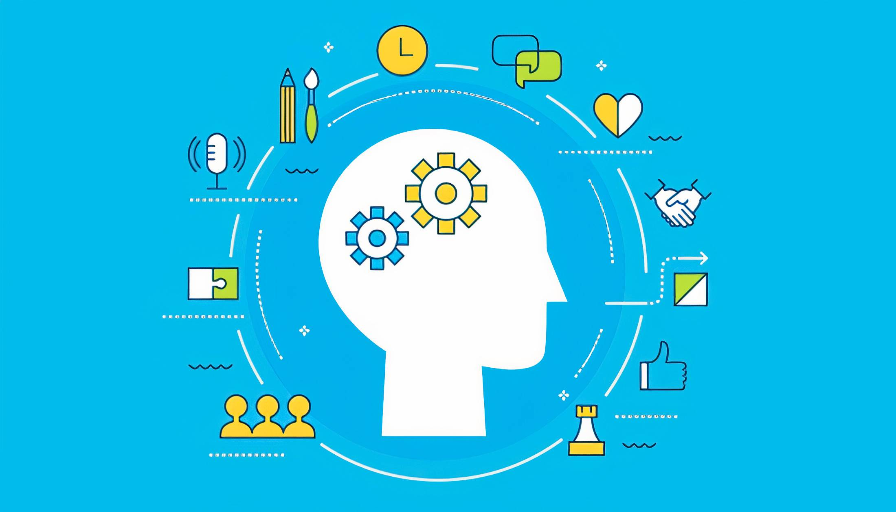

Soft Skills

Soft skills são habilidades comportamentais importantes para o convívio e
o sucesso no ambiente de trabalho.
Exemplos de Soft Skills:
- Comunicação eficaz
- Trabalho em equipe
- Empatia
- Resiliência
- Adaptabilidade
Como desenvolver Soft Skills:
- Praticar escuta ativa
- Buscar feedback regularmente
- Participar de projetos em grupo
- Observar e aprender com os outros
- Estudar sobre inteligência emocional
Soft Skills no dia a dia:
-
Em reuniões
- Ouvir com atenção
- Se comunicar com clareza
- Ao resolver conflitos
- Durante colaborações em grupo